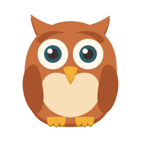
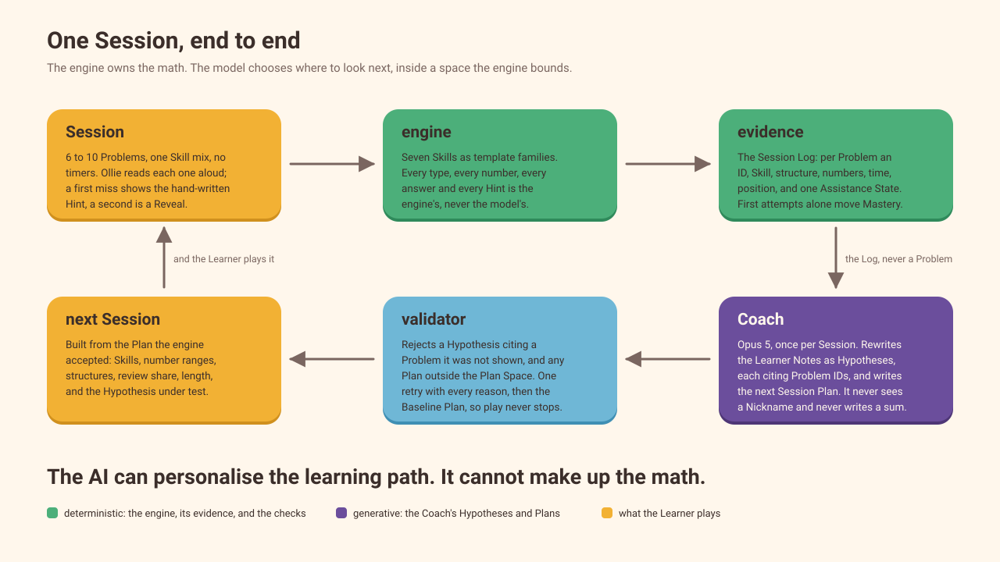
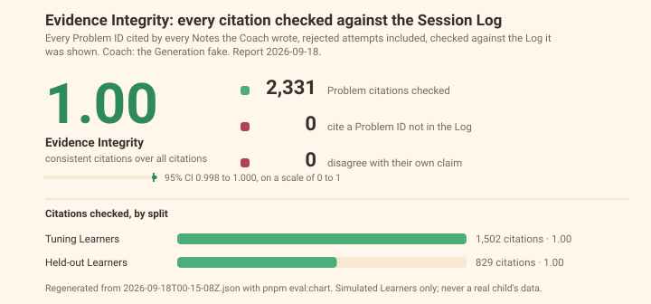
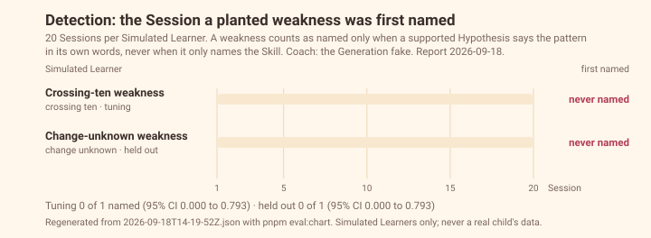
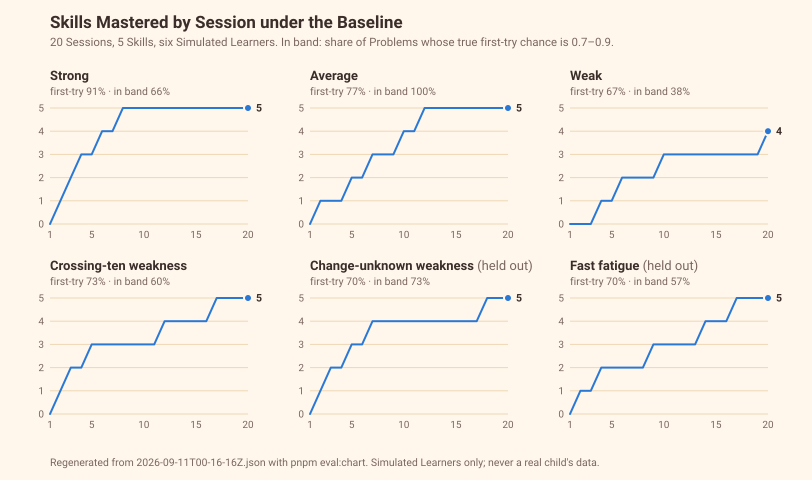
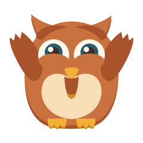

Most math apps adapt difficulty.
Ollie adapts to how the learner is learning.
A Grade 1 math game with an AI Coach that can be checked.
What it is
Demo
One easy sum, one that crosses ten, a Hint, a Power, and what the Coach makes of it.
How it's built

The AI can personalise the learning path. It cannot make up the math.
Two seams
Every problem, every answer, every Hint, Mastery, Powers, Coins, Streak. A pure function, deterministic, 623 tests. No model near it.
Word problems in the child's theme. The Coach's beliefs and next plan. The parent summary. Ollie's voice. One interface, one fake for every test.
A story that changes a number is rejected. A plan outside the curriculum is rejected. A belief citing a problem the Coach never saw is rejected. Then the Baseline plan, so play never stops.
Built in nine days with Claude Code. Every line of that is disclosed.
Before we believed it
Finding 1
95,921
Every belief points at the problems it rests on. Across 360 Sessions the Coach cited a problem it had never seen once, and the engine rejected that attempt at the door.

Finding 2
Four of six chances. Crossing ten around Session 6; change unknown at 13 and 16.
The miss was instructive: the Coach found "half the make-a-ten items draw help", the exact planted rate, at the Skill level, and our rule only credits the pattern.
358 of 360 plans accepted first time. Zero fell to the fixed plan.

Finding 3: the honest part
One supported belief in six on some children names a weakness that isn't there. Eight problems a day is a small sample.
The drill Baseline reaches Mastery a little sooner. Our simulated children can't learn from practice, so a Session spent investigating is a Session not spent at the gate.
Both are in the write-up, with the ranges.

After the hackathon
The engine counts the slices and tests them. The Coach can only call a belief supported when the counts back it. Fewer ghosts.
A practice effect in the simulated learners, so the speed comparison measures teaching. A second judge from another model family.
Measured: about $0.21 a Session on Opus, about $0.05 on Sonnet. A $6.99 subscription pays for a child who plays every day.

ollie.rahatcodes.com · github.com/Rahat-ch/ollie